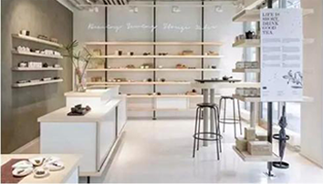
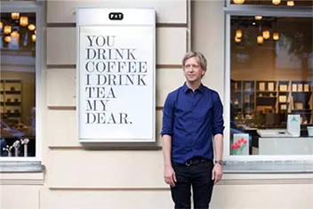
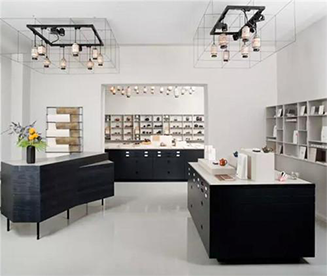
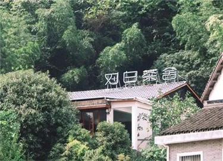
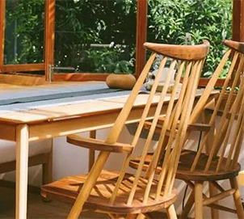
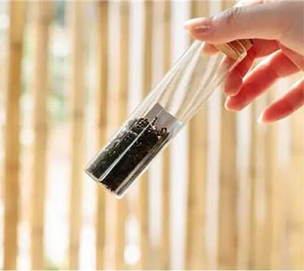
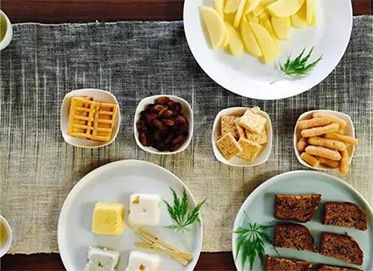

TEAHOUSE FOR EVOLUTION
NEWS WONDERFUL

悄无声息占领世界的时尚茶馆

手捧咖啡自然小资，却不知当茶馆碰撞时尚席卷来最富东方韵味的潮流风。



Paper & Tea是一间位于柏林的特色茶馆，游历了中国、日本等国家后Jens用 新颖的设计一改当地民众对茶的印象。没有东方古Paper & Tea是一间位于柏 林的特色茶馆，游历了中国、日本等国家后Jens用新颖的设计一改当地民众对 茶的印象。没有东方古
各个包厢也别具特色，在和式包厢中品尝蒸青煎茶的清静平和；在四和院中品味茉莉香片的浓郁京味；于江南小筑中得其龙井御茶得神髓。 更有墙上的名家字画，紫砂名壶和历代茶具。深厚的人文底蕴潜藏其中，却没有俯仰清高的压抑感，给人以返朴归真、回归自然的闲适与宁静。 凭着对茶的感情，对茶馆的热情及茶客的热切心情，2011年2月，在锦绣天地青藤开出了第五家分馆，与前几家不同的是，该馆更注重品茶， 每一片茶叶、每一滴泉水都是经过精心挑选的，闲暇之余不妨去感受一下吧！




对白茶舍坐落在杭州满觉陇48号的巷子里，阳光从巨大的落地窗洒进来留下斑驳的剪影。不失传统风的桌椅摆设让明亮简洁的空间增添里一丝